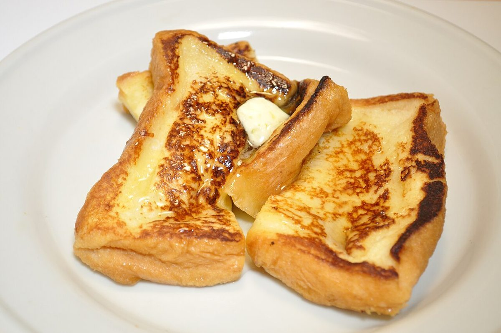

fol. 2r
メニュー
メニューの内容と価格は準備中です。まだ何も書かれていない目次の形でご案内します。
§ 目次(準備中)
- ⅰ(空欄)準備中
- ⅱ(空欄)準備中
- ⅲ(空欄)準備中
- ⅳ(空欄)準備中
お店で何を出しているかは確認できていないため、項目名も空欄にしています。分かり次第、書き込みます。
§ 挿絵の頁(イメージ)
写真が入る場所の見本




いずれもフリー素材のイメージです。実際の写真はお店ご提供のものに差し替えます。
fol. 2r
メニューの内容と価格は準備中です。まだ何も書かれていない目次の形でご案内します。
§ 目次(準備中)
お店で何を出しているかは確認できていないため、項目名も空欄にしています。分かり次第、書き込みます。
§ 挿絵の頁(イメージ)

いずれもフリー素材のイメージです。実際の写真はお店ご提供のものに差し替えます。